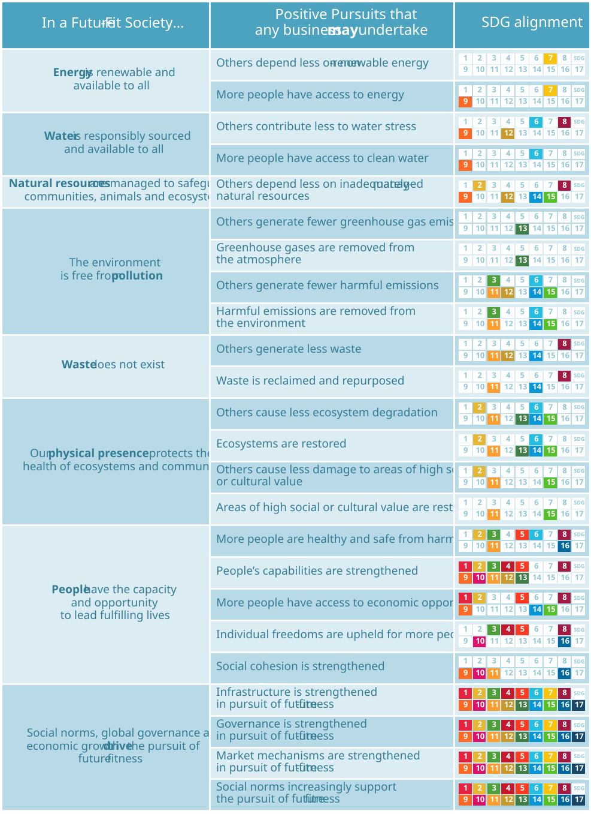

7. Positive Pursuits
Figure 7.1: The Future-Fit Positive Pursuits.

7.1 Energy
In a Future-Fit Society, energy is renewable and available to all.
PP01: Others depend less on non-renewable energy
Every company must eliminate its own dependence on non-renewable energy, to live up to the Break-Even Goals. Here we consider actions that go beyond this.
This Positive Pursuit applies if – as a result of the company’s action:
- More renewable energy is available to replace non-renewable alternatives; or
- Others are able to meet their needs using less energy.
PP02: More people have access to energy
Many companies contribute goods and services to the global energy system, but that does not necessarily mean they are speeding up society’s progress to future-fitness: the key issue here is access.
This Positive Pursuit applies if – as a result of the company’s action:
- Previously underserved people gain reliable and affordable access to both clean cooking facilities and electricity.6
Note: In a Future-Fit Society, everyone will have access to renewable energy. However, if energy is provided to people who previously had none, then a major barrier to their wellbeing is being removed, even if that energy is derived from non-renewable sources. This is an important outcome which should be recognized – while acknowledging that it is a less-than-perfect interim step toward full access to renewable energy. Also note that if a company generates more GHG emissions as a result of providing such access to energy, or causes its customers to do so, those side-effects will be captured as negative contributions to the Break-Even Goals focused on operational and product GHG emissions respectively.
7.2 Water
In a Future-Fit Society, water is responsibly sourced and available to all.
PP03: Others contribute less to water stress
Every company must eliminate its own contribution to water stress, to live up to the Break-Even Goals. Here we consider actions that go beyond this.
This Positive Pursuit applies if – as a result of the company’s action:
- More clean water is made available without exacerbating water stress; or
- Others are able to meet their needs using less water.
PP04: More people have access to clean water
Many companies contribute goods and services to the global water system, but that does not necessarily mean they are speeding up society’s progress to future-fitness: the key issue here is access.
This Positive Pursuit applies if – as a result of the company’s action:
- Previously underserved people gain access to clean and reliable freshwater.7
7.3 Natural resources
In a Future-Fit Society, natural resources are managed to safeguard communities, animals and ecosystems
PP05: Others depend less on inadequately-managed natural resources
Every company must ensure that any natural resources it obtains itself are managed responsibly, to live up to the Break-Even Goals. Here we consider actions that go beyond this.
This Positive Pursuit applies if – as a result of the company’s action:
- More responsibly-managed natural resources are produced, to increase the amount available to others;
- A natural resource which was being produced in a disruptive way is transformed to be responsibly-managed;
- Fewer goods and services are derived from endangered or threatened flora and fauna; or
- Less natural resource is required to serve the same needs.
Note: Unlike energy and water, natural resources in their raw form are not a basic need, since a relatively small proportion of people require direct access to them. For this reason, there is not a Positive Pursuit category which refers specifically to natural resource access. However, it is important to keep in mind that all socioeconomic actors rely on goods and services which are ultimately derived from natural resources. So if a company were to offer a new product which embeds only responsibly-managed natural resources – to displace market alternatives which embed inadequately-managed ones – the outcome would be covered by this Positive Pursuit (in this case "Others" would be the customers of the improved product).
7.4 Pollution
In a Future-Fit Society, the environment is free from pollution.
PP06: Others generate fewer greenhouse gas emissions
Every company must eliminate its own greenhouse gas emissions, and any caused by its products as a consequence of their use, to live up to the Break-Even Goals. Here we consider actions that go beyond this.
This Positive Pursuit applies if – as a result of the company’s action:
- An activity is modified to deliver the same results with lower greenhouse gas (GHG) emissions;
- An activity is substituted by another which leads to no GHG emissions; or
- GHGs are intercepted before emission, and either used or stored in a way that prevents later emission.
PP07: Greenhouse gases are removed from the atmosphere
Greenhouse gases are continuously removed from the atmosphere through natural processes of carbon sequestration and storage. In particular, photosynthesis in trees, plants and algae absorbs carbon dioxide from the air and converts it into other carbon compounds. These end up in biomass – such as tree trunks, branches and roots – and soils, which serve as natural carbon sinks.
This Positive Pursuit applies if – as a result of the company’s action:
- Natural carbon sinks are planted, grown or otherwise created;
- Existing natural carbon sinks are enhanced to absorb and store more carbon; or
- GHGs are removed from the atmosphere by technical means, and either used or stored in a way that prevents future emission.
PP08: Others generate fewer harmful emissions
Every company must eliminate its own harmful emissions, to live up to the Break-Even Goals. Here we consider actions that go beyond this.
This Positive Pursuit applies if – as a result of the company’s action:
- An activity is modified to deliver the same results with fewer harmful emissions; or
- An activity is substituted by another which leads to no harmful emissions; or
- Harmful substances are intercepted before emission into the environment, and either used or stored in a way that prevents later emission.
PP09: Harmful emissions are removed from the environment
Some harmful substances – such as scarce metals – may be physically removed from the environment. Others may not be easily removed, but their disruptive effects may be neutralized. For example, a benign chemical may be used to disperse spilled oil and render it harmless.
This Positive Pursuit applies if – as a result of the company’s action:
- Substances which degrade air quality, water quality, or soil health are removed or neutralized; or
- Substances which can otherwise disrupt the health of people,organisms and ecosystems are removed or neutralized.
7.5 Waste
In a Future-Fit Society, waste does not exist.
PP10: Others generate less waste
Every company must eliminate its own waste, and make sure that any goods it provides to others can be repurposed after use, to live up to the Break-Even Goals. Here we consider actions that go beyond this.
This Positive Pursuit applies if – as a result of the company’s action:
- An existing need is met in a new or modified way, resulting in fewer by-products; or
- Materials that would otherwise have been discarded are reused, recycled or (if biogenic and with all other options exhausted) burned for energy.
PP11: Waste is reclaimed and repurposed
In many cases, environmental degradation can be reduced or even reversed by ‘re‑extracting’ and reusing previously discarded materials, that have been left to build up in nature, in place of virgin natural resources.
This Positive Pursuit applies if – as a result of the company’s action:
- Previously generated waste is removed from the environment – such as landfills or oceans – and repurposed as a production input.
7.6 Physical presence
In a Future-Fit Society, our physical presence protects the health of ecosystems and communities.
PP12: Others cause less ecosystem degradation
Every company must avoid encroaching on ecosystems, to live up to the Break-Even Goals. Here we consider actions that go beyond this.
This Positive Pursuit applies if – as a result of the company’s action:
- Ecosystems are protected from further encroachment; or
- Activities that lead to ecosystem degradation are avoided.
PP13: Ecosystems are restored
Ecosystems which have been damaged by human presence do not have to remain degraded. Through certain activities, they can gradually be restored to their previous state, or a well-functioning approximation thereof.
This Positive Pursuit applies if – as a result of the company’s action:
- Ecosystems are actively restored – for example by replanting native trees, repairing natural flood defences, and re-introducing native species to speed up recovery; or
- Ecosystems are allowed to regenerate naturally – for example by protecting degraded areas from further human interference.
PP14: Others cause less damage to areas of high social or cultural value
Every company must avoid encroaching on areas of high social or cultural value, to live up to the Break-Even Goals. Here we consider actions that go beyond this.
This Positive Pursuit applies if – as a result of the company’s action:
- Areas of social or cultural importance are protected; or
- Land grabbing practices are avoided by establishing people’s traditional or customary rights to use, manage and control land, fisheries and forests.
PP15: Areas of high social or cultural value are restored
Cultural heritage has increasingly been seen as an instrument for peace and reconciliation. Its restoration can help rebuild societies and overcome a sense of loss in the wake of conflict. Furthermore, in recent years, a legal precedent has been established where land has been returned to those with traditional or customary rights.
This Positive Pursuit applies if – as a result of the company’s action:
- Areas of cultural or social value are reconstructed or rebuilt; or
- Land which has been acquired in a contentious way is returned to those with traditional or customary rights to it.
7.7 People
In a Future-Fit Society, people have the capacity and opportunity to lead fulfilling lives.
PP16: More people are healthy and safe from harm
Every company must safeguard the health of its employees, customers, and communities, to live up to the Break-Even Goals. Here we consider actions that go beyond this.
This Positive Pursuit applies if – as a result of the company’s action:
- Premature deaths and illnesses are prevented;
- Exploitation and abuse is prevented;
- Mental health issues are prevented;
- Slavery and forced labour is prevented;
- More people gain access to nutritious food, and an end to malnutrition;
- More people gain access to clean water and sanitation;
- More people gain access to adequate housing; or
- More people gain access to healthcare, including reproductive healthcare services.
PP17: People’s capabilities are strengthened
People should have access to the relevant knowledge, technology and services that will allow them to respond to day-to-day challenges and opportunities to the best of their ability.
This Positive Pursuit applies if – as a result of the company’s action:
- More people gain access to education and vocational training;
- More people gain access to information needed to make more informed decisions, for example with respect to reproductive choices;
- More people gain access to information and communication technologies;
- More people gain access to productivity-enhancing technologies, such as farming implements or manufacturing equipment;
- More people gain access to social security, insurance and finance, as a means to build resilience to unforeseen shocks; or
- More people gain access to transport networks, to bring more opportunities within their reach.
PP18: More people have access to economic opportunity
Every company must ensure its own employees are subject to fair employment terms and paid a living wage, to live up to the Break-Even Goals. Here we consider actions that go beyond this.
This Positive Pursuit applies if – as a result of the company’s action:
- More people have access to livelihood opportunities which live up to the definition of Decent Work8;
- Access to markets and value chains is available to people who were previously unable to participate;
- The right to benefit economically from local resources, including land, is upheld for more communities.
PP19: Individual freedoms are upheld for more people
Every company must ensure its own employees are not subject to discrimination of any kind, to live up to the Break-Even Goals. Here we consider actions that go beyond this.
People’s individual freedoms must be respected, so that everyone can express themselves and participate in social, political and economic life without fear of discrimination.
This Positive Pursuit applies if – as a result of the company’s action:
- Freedom of thought, conscience, religion, opinion, expression and association is upheld for more people;
- More people are free from discrimination;
- The right to bodily integrity9 is upheld for more people; or
- The right to privacy is upheld for more people.
PP20: Social cohesion is strengthened
For everyone to have the opportunity to pursue higher needs, people must be able to form, participate in and rely on social groups. Such social cohesion is crucial to building trust and respect among individuals, communities and institutions.
Social cohesion depends on strong bonds within communities and strong bridges between communities. The emphasis of this Positive Pursuit is therefore not on safeguarding individual wellbeing, but on fostering common ground and closing opportunity gaps between individuals.
This Positive Pursuit applies if – as a result of the company’s action:
- Social divides are overcome – such as language barriers and prejudices;
- Economic divides are overcome – such as a lack of affordability or education; or
- Physical barriers are overcome – such as a lack of access to appropriate shared spaces.
7.8 Drivers
In a Future-Fit Society, social norms, global governance and economic growth drive the pursuit of future-fitness.
PP21: Infrastructure is strengthened in pursuit of future-fitness
Most human activities depend on various kinds of infrastructure, which together serve as an essential foundation for achieving an efficient, inclusive and resilient society.
Infrastructural gaps and shortcomings are one of the primary reasons why millions of people today lack access to basic services such as energy, clean water, sanitation, connectivity and mobility.
Existing infrastructure is often highly inefficient and may even impede progress toward future-fitness. The infrastructure investment choices society makes over the coming years will effectively lock-in our transition pathway – for good or bad.
This Positive Pursuit applies if – as a result of the company’s action:
- Infrastructure gaps are closed, to provide access to basic services for underserved people;
- Existing infrastructure is upgraded to improve efficiency;
- Existing infrastructure is altered to reduce its negative operational impacts; or
- Infrastructure is created or upgraded to enhance resiliency.
PP22: Governance is strengthened in pursuit of future-fitness
The concept of governance can be considered at many levels: international, national, local and corporate. It relates to the way decisions are made and how those decisions are implemented – through regulation, policies, processes and so on.
This Positive Pursuit focuses on how a company might influence governance structures beyond its own organisation – such as those within governments or public institutions – to support the systemic pursuit of future-fitness.10
Trust in governance is associated with low levels of corruption, democratic stability and relative economic equality, but there is no shortcut to trust.
Institutions can only accrue trust over time if they are transparent in their decisions, consistently do what they say they will, and continuously strive to act in the best interests of those they serve. The relationship between trust and good governance is circular: each fosters the other.
This Positive Pursuit applies if – as a result of the company’s action:
- Governance at an international, national or local level is made to be more accountable, participatory, responsive, responsible and transparent.
PP23: Market mechanisms are strengthened in pursuit of future-fitness
Every company can take steps to improve its own future-fitness, but some barriers are exceedingly difficult to overcome by any one business alone, because they exist at a market level.
Such barriers may hinder the efforts of even the most committed company, but any action to remove one could
potentially enable not just the company but also its peers and other market actors to make much-needed progress.
This Positive Pursuit applies if – as a result of the company’s action:
- Market barriers to the pursuit of Future-Fit outcomes are removed.
PP24: Social norms increasingly support the pursuit of future-fitness
Social norms are the formal and informal rules that govern behaviour in groups and across society. They are what groups of people believe to be normal or appropriate, and they operate at different levels: individuals, industries, countries, communities, and internationally.
A Future-Fit Society encourages diversity of thought and culture, as well as individual expression. In such a society, everyone is free to define and pursue a life of personal fulfilment as part of the broader community, because social norms are fully aligned in support of this pursuit.
In order to transition to a Future-Fit Society, many of today’s entrenched social norms need to be challenged.
This Positive Pursuit applies if – as a result of the company’s action:
- Social norms which are misaligned with a Future-Fit Society are successfully challenged.
It should be noted, however, that changes in social norms can rarely – if ever – be traced back to a single cause, not least because multiple factors are usually at play.
Bibliography
There is no single universally-agreed understanding of what ‘access to energy’ means. The description used here draws on the International Energy Agency’s methodology for defining energy access. [19]↩︎
A commonly used definition of ‘access to water’ is having a source of clean, reliable water within one kilometer of a person’s dwelling. [20]↩︎
“Decent Work” is defined by the International Labour Organization as work that is “productive, delivers a fair income with security and social protection, safeguards the basic rights, offers equality of opportunity and treatment, prospects for personal development and the chance for recognition and to have your voice heard”. [21]↩︎
Right to bodily integrity emphasizes a person’s right to autonomy over their own body and is stipulated in the EU Charter of Fundamental Rights. [22]↩︎
Corporate governance is an important determinant for how companies act and respond to change. In fact, good governance structures are central to a company’s capacity to bring social and environmental considerations into the core of how it does business. This is reflected by the fact that a wide range of governance criteria can be found embedded throughout the Break‑Even Goals.↩︎